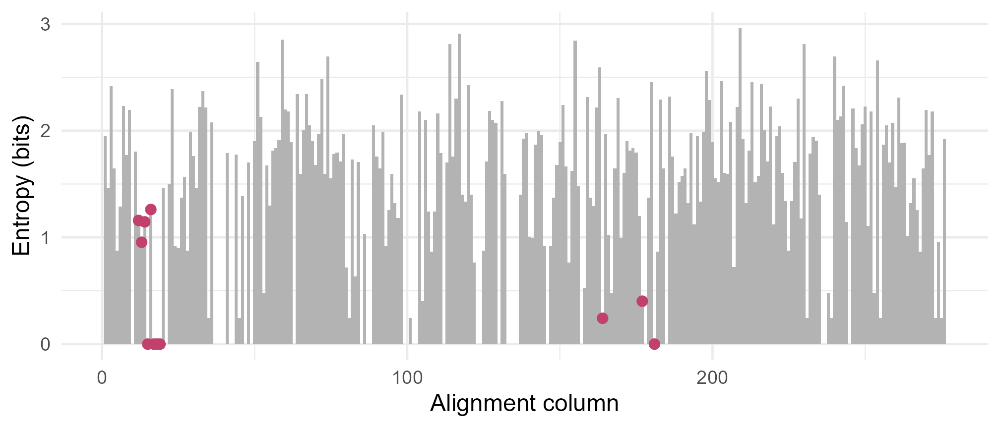

Module 10 · Lesson 7 of 13 Week 153 of 160 About 5–7 hours
Multiple sequence alignment
Twenty-five relatives in one table
Line up the whole ketoreductase family at once. Learn how progressive aligners build a multiple alignment from a guide tree, then work with the family’s alignment: map residues to columns, compute pairwise identities and the guide tree, a consensus sequence, conservation and entropy per column, and find the conserved motif and catalytic residues. Build a position-specific scoring matrix (a profile) from the alignment and use it to search the database.
A pairwise alignment compares two sequences. A multiple sequence alignment (MSA) puts a whole family in one table, one row per sequence, so that each column holds residues that descend from the same position in the family’s ancestor. It’s the starting point for almost everything else: finding the residues that matter (they’re the ones that never change), building profiles for more sensitive searches, and inferring the family tree (Lessons 8 and 9).
One table, twenty-five enzymes, a few hundred million years of evolution. The columns that never change are the enzyme’s secrets.
In this lesson you’ll:
- understand progressive alignment and its guide tree
- read an alignment and map a sequence’s residues to its columns
- compute pairwise identities and a guide tree from the alignment
- compute a consensus, the conservation and entropy of each column, and find the conserved sites
- clean gappy columns, and build and use a position-specific scoring matrix
How multiple alignments are made
Aligning N sequences optimally by dynamic programming would need an N-dimensional table: for 25 sequences of 250 residues, 250^{25} cells. So practical aligners use heuristics, most often progressive alignment (Feng and Doolittle, 1987; Clustal, 1988):
- Align every pair, and compute their distances.
- Build a guide tree from the distances (by UPGMA or neighbour joining, Lesson 8).
- Following the tree from the leaves, align the closest pair, then align the next sequence (or group) to that pair’s profile, and so on until all are in.
“Once a gap, always a gap”: a gap placed early is never removed, so early mistakes propagate. Modern aligners refine the result iteratively (MUSCLE, MAFFT) or add consistency information from all the pairwise alignments (T-Coffee). None of them runs in the browser version of R, so this lesson uses the family’s alignment as delivered (made from the simulation that created the family, so it’s the true alignment that aligners aim for); the practice section shows how to make your own in RStudio.
The setup code reads the alignment as a character matrix: 25 rows, one column per alignment position, with - for gaps.
Your turn. How many columns does the alignment have, what share of its cells are gaps, and how long is each sequence without its gaps?
Count the cells that aren’t "-".
ungapped <- rowSums(al != "-")
c(columns = ncol(al), gap_share = mean(al == "-"), shortest = min(ungapped), longest = max(ungapped))276 columns, of which 8.6% of the cells are gaps; without their gaps, the sequences are 250 to 259 residues long. Every column is a hypothesis: that its residues all descend from one residue of the ancestral enzyme.
Your turn. Residue numbers refer to one sequence; columns to the alignment. Map PL7_KRED’s residues 12 (the start of the TGxxxGxG motif), 141, 154 and 158 (the catalytic serine, tyrosine and lysine) to their columns.
The catalytic lysine is residue 158.
col_of <- which(al["PL7_KRED", ] != "-") # col_of[k] is the column of residue k
cols <- col_of[c(12, 141, 154, 158)]
rbind(column = cols, residue = al["PL7_KRED", cols])Residue 12 (T) is in column 12, but the catalytic S, Y and K are in columns 164, 177 and 181: 23 columns later than their residue numbers, because other family members have insertions before them. Biologists refer to positions by residue number in a reference sequence; the alignment translates between sequences.
Identities and the guide tree
Your turn. Compute the percentage identity of every pair of sequences, counting only columns where both have a residue, and find the closest and the most distant pairs.
Compare row i with row j.
n <- nrow(al)
id <- matrix(1, n, n, dimnames = list(rownames(al), rownames(al)))
for (i in 1:(n - 1)) for (j in (i + 1):n) {
both <- al[i, ] != "-" & al[j, ] != "-"
id[i, j] <- id[j, i] <- mean(al[i, both] == al[j, both])
}
off <- id; diag(off) <- NA
c(closest = max(off, na.rm = TRUE), most_distant = min(off, na.rm = TRUE), pl7_mean = mean(off["PL7_KRED", ], na.rm = TRUE))The closest pair is 90.4% identical and the most distant 22.9%: the family spans near-twins to the twilight zone. PL7_KRED is, on average, 51% identical to the others. Identities computed from a multiple alignment differ a little from pairwise ones, because the multiple alignment places some gaps differently.
Your turn. Build a guide tree by average-linkage clustering (UPGMA) of the distances 1 - \text{identity}, and find which pair a progressive aligner would align first.
Average linkage is UPGMA: "average".
n <- nrow(al)
id <- matrix(1, n, n, dimnames = list(rownames(al), rownames(al)))
for (i in 1:(n - 1)) for (j in (i + 1):n) {
both <- al[i, ] != "-" & al[j, ] != "-"
id[i, j] <- id[j, i] <- mean(al[i, both] == al[j, both])
}
guide <- hclust(as.dist(1 - id), method = "average")
first <- guide$merge[1, ] # negative numbers are single sequences
c(first_pair = paste(rownames(al)[-first], collapse = " + "), height = guide$height[1])SDR_10 and SDR_16, at a distance of 0.096 (90.4% identity), the closest pair, would be aligned first. hclust()’s merge matrix lists the merges in order; negative entries are single sequences, positive ones clusters formed earlier.
Consensus and conservation
Your turn. Compute the consensus sequence: the most common residue in each column (ignoring gaps), and its share. Then compare PL7_KRED with the consensus.
Use the same positions on both sides: where PL7_KRED isn’t a gap.
top_res <- apply(al, 2, function(col) { col <- col[col != "-"]; names(which.max(table(col))) })
top_share <- apply(al, 2, function(col) { col <- col[col != "-"]; max(table(col)) / length(col) })
pl7 <- al["PL7_KRED", ]
c(consensus_start = paste(top_res[1:20], collapse = ""), pl7_start = paste(pl7[1:20], collapse = ""),
pl7_matches = mean(pl7[pl7 != "-"] == top_res[pl7 != "-"]))The consensus starts VCEKHTMKESEGGAASGIGL and PL7_KRED starts MCRKHPMKESGTGAASGIGL: both have the motif region GAASGIG, and overall PL7_KRED carries the consensus residue at 67.9% of its positions. A consensus is a summary, not a real protein: no family member needs to match it everywhere.
Your turn. How conserved are the motif and the catalytic residues? Compute the share of sequences carrying PL7_KRED’s residue in each of their columns.
The column of residue k.
col_of <- which(al["PL7_KRED", ] != "-")
sites <- c(T12 = 12, G13 = 13, G17 = 17, G19 = 19, S141 = 141, Y154 = 154, K158 = 158)
sapply(sites, function(k) { col <- al[, col_of[k]]; mean(col == al["PL7_KRED", col_of[k]]) })The glycines G17 and G19 and the catalytic lysine K158 are in every sequence; the serine S141 in 96%, the tyrosine Y154 in 92%, G13 in 84%. The motif’s first position, T12, is shared by only 36%. The glycines let the NADPH cofactor sit close to the protein’s backbone, and the serine, tyrosine and lysine do the chemistry, so the family can’t afford to change them; the occasional exception is either a very old divergence or an enzyme that has lost its activity (the project has one).
Your turn. A column’s Shannon entropy, H = -\sum_a p_a \log_2 p_a over the residues present, is 0 for a column of one residue and up to \log_2 20 = 4.3 bits for a column with all 20 equally. Compute it for every column, count the invariant columns, and compare the motif region with the rest.
\log_2 p: log2(p).
H <- apply(al, 2, function(col) { col <- col[col != "-"]; p <- table(col) / length(col); -sum(p * log2(p)) })
c(invariant = sum(H == 0), median = median(H), motif_mean = mean(H[12:19]), others_mean = mean(H[-(12:19)]))38 of the 276 columns are invariant, the median entropy is 1.61 bits, and the motif region (columns 12 to 19) averages 0.56 bits against 1.45 elsewhere. The plot below shows where the conserved positions lie.

Your turn. Columns that are mostly gaps (an insertion in one or two sequences) carry little information and are often removed before building trees. Count the columns with more than half gaps, and the width after removing them.
More than half: 0.5.
gap_share <- colMeans(al == "-")
gappy <- gap_share > 0.5
c(gappy_columns = sum(gappy), width_after = sum(!gappy), any_gaps = sum(gap_share > 0))25 columns are more than half gaps: insertions in a few sequences. Removing them leaves 251 columns. 34 columns have at least one gap.
Profiles
A profile, or position-specific scoring matrix (PSSM), turns an alignment into scores: for each column k and residue a, s_k(a) = \log_2(f_k(a) / p_a), where f_k(a) is the residue’s frequency in the column and p_a its background frequency. A conserved glycine column gives G a high score and everything else a very low one; a variable column scores everything near 0. Pseudocounts (adding a little of the background to each column) keep unseen residues from scoring -\infty.
Your turn. Build a PSSM for the alignment’s first 60 columns, with pseudocounts, and score PL7_KRED’s own first 60 columns.
Divide by the background, bg.
bg <- c(7.8, 5.1, 4.5, 5.4, 1.9, 4.3, 6.3, 7.4, 2.6, 6.8, 9.9, 5.8, 2.5, 4.7, 3.9, 5.7, 5.1, 1.3, 3.2, 6.6)
bg <- setNames(bg / sum(bg), aa)
cols <- 1:60
pssm <- sapply(cols, function(k) {
col <- al[, k]; col <- col[col %in% aa]
f <- (table(factor(col, levels = aa)) + 20 * bg) / (length(col) + 20) # 20 pseudocounts, spread like the background
log2(f / bg)
})
pl7 <- al["PL7_KRED", cols]; ok <- pl7 %in% aa # skip PL7_KRED's gaps
c(score_pl7 = sum(pssm[cbind(match(pl7[ok], aa), seq_along(cols)[ok])]), best_possible = sum(apply(pssm, 2, max)), G17 = pssm["G", 17], A17 = pssm["A", 17])PL7_KRED’s first 60 residues score 125.9 bits against the profile, out of a best possible 150.7 (if every column had its best residue). In column 17, the motif’s first G, a G scores +3.0 bits and an A -1.2: the profile rewards the residues the family keeps and penalizes the others, column by column.
NoteGo deeper: from profiles to profile HMMs
A PSSM has no gaps: it scores a fixed-width window. A profile hidden Markov model (Krogh and others, 1994; Lesson 10’s machinery) adds, for each column, an insert state (extra residues between columns) and a delete state (skipping the column), with position-specific transition probabilities, so that a family’s indel patterns are modelled too. HMMER (Sean Eddy) searches databases with profile HMMs, and the Pfam database holds profile HMMs for about 20,000 protein families; the SDR family is Pfam’s PF00106, “adh_short”. Profile searches are much more sensitive than pairwise ones, because a profile knows which positions matter. Richard Durbin and others, Biological Sequence Analysis, chapters 5 and 6, explains profile HMMs and their training from alignments.
Challenge round
Challenge 1 · A profile search. Score every protein in the database with the PSSM: slide the 60-column profile along each sequence (ignoring gaps, so using a window of 60 residues) and keep the best window. Compare the family members’ best scores with the unrelated proteins’.
The unrelated proteins: other.
bg <- c(7.8, 5.1, 4.5, 5.4, 1.9, 4.3, 6.3, 7.4, 2.6, 6.8, 9.9, 5.8, 2.5, 4.7, 3.9, 5.7, 5.1, 1.3, 3.2, 6.6)
bg <- setNames(bg / sum(bg), aa)
pssm <- sapply(1:60, function(k) { col <- al[, k]; col <- col[col %in% aa]
log2(((table(factor(col, levels = aa)) + 20 * bg) / (length(col) + 20)) / bg) })
db <- readAAStringSet("data/protein_db.fasta")
best_window <- function(s) {
s <- match(strsplit(as.character(s), "")[[1]], aa); L <- ncol(pssm)
max(sapply(1:(length(s) - L + 1), function(st) sum(pssm[cbind(s[st:(st + L - 1)], 1:L)])))
}
best <- sapply(db, best_window)
sdr <- grepl("^(PL7|SDR)", names(db)); other <- !grepl("^(PL7|SDR|RMT)", names(db))
c(sdr_min = min(best[sdr]), other_max = max(best[other]), sdr_above_other_max = sum(best[sdr] > max(best[other])))The SDR members’ best windows score from 5.3 upward, and the best unrelated protein 7.1: 24 of the 25 SDR members score above every unrelated protein. The one that doesn’t has diverged in its first 60 residues. A 60-column ungapped profile is a short ruler; full-length profiles with gaps (the profile HMMs of the box above) do better.
Challenge 2 · Align it yourself. In RStudio, install msa from Bioconductor (BiocManager::install("msa")), remove the gaps from kred_family_aligned.fasta (AAStringSet(gsub("-", "", ...))), and realign with msa(..., method = "ClustalOmega") and "Muscle". In what share of columns does each aligner agree with the true alignment? (Compare which residues share a column, not the column numbers.)
Quick quiz
1. Why don’t multiple aligners use exact dynamic programming?
L^N cells for N sequences of length L.
2. In progressive alignment, the guide tree decides:
Closest pairs first; it’s a heuristic, not the inferred tree.
3. “Once a gap, always a gap” refers to:
Iterative refinement (MUSCLE, MAFFT) addresses it.
4. A column’s entropy of 0 means:
Invariant columns are often functionally essential.
5. Why add pseudocounts to a profile?
Unseen doesn’t mean impossible.
6. Why can a profile search be more sensitive than a pairwise one?
A pairwise search treats every position of the query equally.
Wrap-up
You’ve worked with a family alignment. Here’s what you’ve learned:
- Progressive alignment builds an MSA from a guide tree; “once a gap, always a gap” is its weakness.
- The family’s alignment: 25 sequences in 276 columns; the catalytic S, Y and K of PL7_KRED sit in columns 164, 177 and 181.
- Identities and a guide tree from the alignment; a consensus that PL7_KRED matches at 68% of its residues.
- Conservation: 38 invariant columns; the motif’s glycines and the catalytic lysine are (almost) invariant.
- Profiles: a PSSM scores sequences position by position, and separates the SDR family from unrelated proteins in a database search.
TipPractice in RStudio (optional, about an hour)
Download kred_family_aligned.fasta and protein_db.fasta into your project’s data-raw/ folder.
- A sequence logo. Install ggseqlogo and draw a logo of the motif region (columns 5 to 30). Which positions stand out?
- Sum-of-pairs score. Compute the alignment’s sum-of-pairs score with BLOSUM62 and a gap penalty of -4 per gap position. Then shift one sequence’s residues one column to the right in a region, and recompute. How much does the score drop?
- Weighting. Close relatives are over-represented in most families. Compute Henikoff position-based sequence weights, rebuild the PSSM with them, and see whether the profile search improves.
- Pfam. Look up Pfam family PF00106 on the InterPro website and look at its HMM logo. Do you recognize the TGxxxGxG motif?
NoteKey words from this lesson
- Multiple sequence alignment (MSA)
- An alignment of three or more sequences, one per row, with homologous residues in the same column.
- Progressive alignment
- Building an MSA by aligning sequences and groups in the order of a guide tree.
- Guide tree
- A quick clustering of the sequences that fixes the order of progressive alignment.
- Consensus sequence
- The most common residue in each column.
- Conservation, Shannon entropy
- How little a column varies; entropy measures its diversity, 0 for an invariant column.
- Position-specific scoring matrix (PSSM), profile
- Log-odds scores for each residue at each alignment position.
- Pseudocounts
- Small counts added to observed frequencies so that unseen residues get a finite score.
- Profile HMM
- A hidden Markov model of a family alignment with match, insert and delete states.
NoteWant to read more?
- Richard Durbin and others, Biological Sequence Analysis (Cambridge, 1998), chapters 5 and 6, on profiles, profile HMMs and multiple alignment.
- Kazutaka Katoh and Daron Standley, “MAFFT multiple sequence alignment software version 7”, Molecular Biology and Evolution 30, 2013, pages 772 to 780, on one of today’s standard aligners.
- Ulrich Bodenhofer and others, “msa: an R package for multiple sequence alignment”, Bioinformatics 31, 2015, pages 3997 to 3999, the Bioconductor package for RStudio.